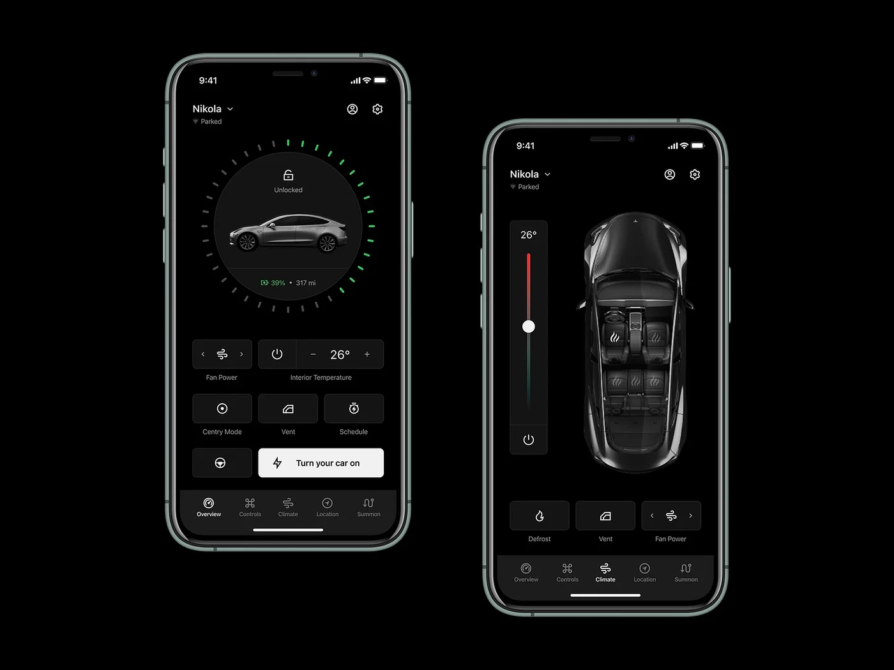
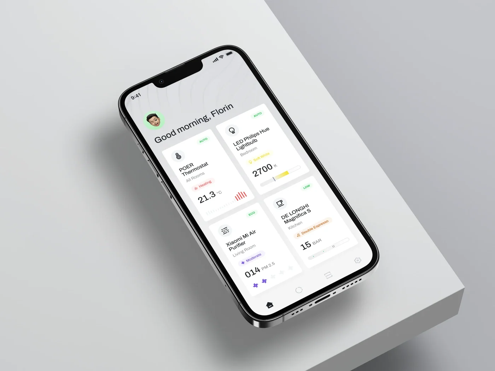
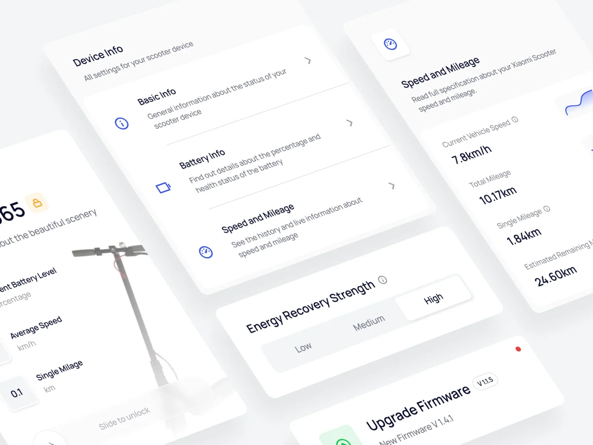
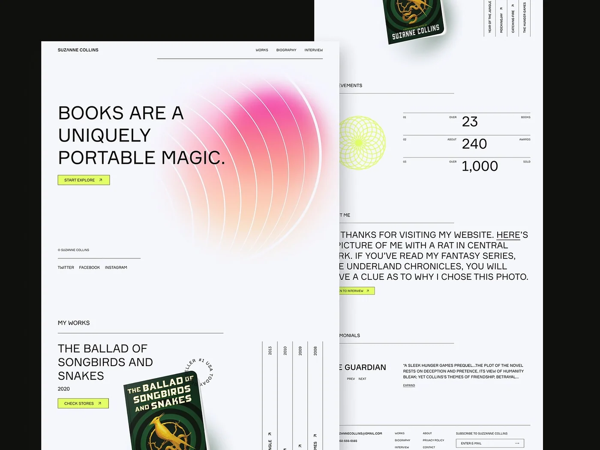
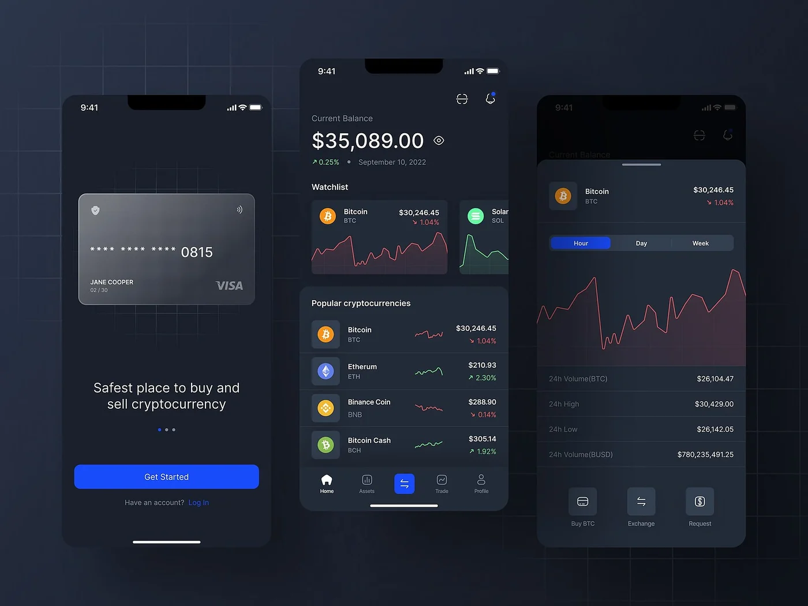

Landing page
Flexible jobs marketplace: one waitlist page, two audiences
A pre-launch page for a marketplace of verified, flexible jobs for students.
06 / Shorter projects and explorations
Not every project needs twelve pages. These are audits, short engagements and visual explorations: smaller in scope, same way of thinking. Each one starts from a question and ends with something a team can build on.
A / From client work
Landing page
A pre-launch page for a marketplace of verified, flexible jobs for students.

eLearning platform
A founder wanted to share what he knew with other entrepreneurs.

Mobile app
When someone is admitted, keeping up is hard for everyone.
B / Explorations

Personal concept
A visual jam around the Marshall sound, not an official project.

Concept
A project management dashboard: sprint status, story points, velocity and team load.

Concept
Part of a series of hero explorations.

Unofficial redesign
A new look and feel for the Tesla app.

Concept
A calm overview of rooms, devices and energy readings.

Concept
Battery, speed, mileage and firmware.

Concept redesign
A bookstore redesign: a bolder editorial hero, clear sections for new releases and small stats that give the shop a voice.

Concept
Portfolio balance, watchlist and market charts in a dark UI where the numbers stay readable at a glance.


Concept / SaaS dashboard
A task management dashboard explored in two directions: a project timeline and a settings screen.
View on Dribbble
Concept / Hero study
Furniture landing page ideas, trying different layouts for the hero.
View on DribbbleMore explorations on dribbble.com/cicuplayground Ask me about the full story behind any of these